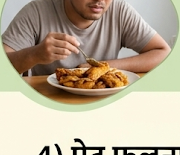
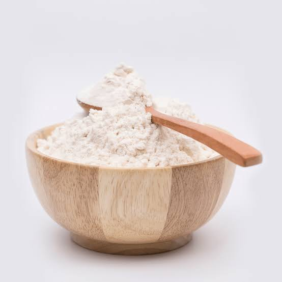
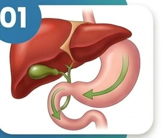
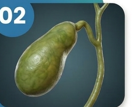
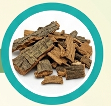
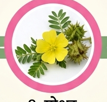
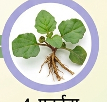
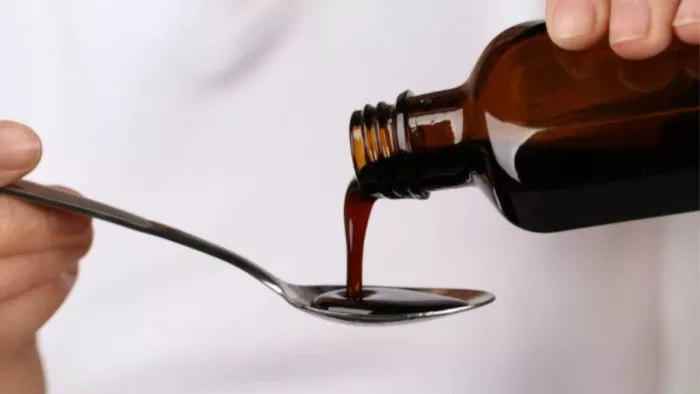

पित्ताशय की पथरी की
परेशानी बढ़ गई है
खाना खाने के बाद
भारीपन और अपच
की परेशानी
डर बना रहता है कि
कहीं यह परेशानी
आगे और गंभीर न हो जाए
क्या आप भी महसूस करते हैं?
शरीर के इन संकेतों को
नज़रअंदाज़ न करें
पेट के ऊपरी दाहिने हिस्से में दर्द
खाना खाने के बाद पेट में भारीपन

तला-भुना खाना खाने के बाद असहजता
पेट फूलना और गैस
अपच और जी मिचलाना
उल्टी जैसा महसूस होना
मिलिए StoneCare पाउडर से

पारंपरिक Ayurvedic herbs से तैयार StoneCare Powder को सही diet और qualified healthcare professional की सलाह के साथ अपनी routine में शामिल करें।
पित्ताशय की सामान्य देखभाल
पाचन से जुड़ी सहायता
असहजता में support

आसान Powder format
StoneCare कैसे काम करता है?
StoneCare की daily routine digestive और gallbladder care support पर focused है।

01 — Supports Normal Bile Flow

02 — Supports Gallbladder Function
03 — Supports Digestive Comfort
04 — Supports Healthy Digestion
प्रमुख Ayurvedic Ingredients
छह पारंपरिक herbs से तैयार StoneCare formula.
1. पाषाणभेद

2. वरुण

3. गोखरू

4. पुनर्नवा
अपनी दैनिक दिनचर्या में StoneCare को शामिल करें।

निर्धारित मात्रा में लें
Label पर बताए गए माध्यम के साथ लें
भोजन और पानी से जुड़ी अच्छी आदतें बनाए रखें
बहुत अधिक तला-भुना और oily food कम करें
नियमित routine बनाए रखें

SPECIAL OFFER
Gallbladder Stone Care की अपनी
Routine आज से शुरू करें
StoneCare को सही diet और healthy lifestyle के साथ अपनी daily routine में शामिल करें।
Herbalsupport
- Free Delivery
- Cash on Delivery Available
- Secure Ordering
- Quality-Focused Formula
- Genuine SS Herbal Product
आज ही शुरुआत करें
आपकी बेहतर सेहत का
पहला कदम यहीं से
अपनी जानकारी भरें। हमारी wellness team आपसे जल्द संपर्क करेगी।
Customer Experience

Amit Sharma (34, Jaipur): StoneCare powder के साथ मेरा अनुभव बहुत सकारात्मक रहा।
Rakesh Verma (39, Lucknow): StoneCare ने मेरी daily routine को support किया।
Sandeep Patel (31, Ahmedabad): यह मेरी digestive care routine का हिस्सा है।
FAQ
अक्सर पूछे जाने वाले सवाल
StoneCare क्या है?
StoneCare एक Ayurvedic herbal formulation है, जिसे Gallbladder और digestive system की सामान्य देखभाल के लिए तैयार किया गया है।
StoneCare किसके लिए उपयोगी है?
यह adults के लिए Gallbladder और digestive care support के उद्देश्य से तैयार किया गया है। उपयोग से पहले product label पढ़ें।
क्या StoneCare पित्ताशय की पथरी को खत्म करता है?
नहीं। StoneCare पित्ताशय की पथरी या किसी अन्य medical condition का diagnosis, treatment या cure नहीं करता।
Gallbladder Stone के आम लक्षण क्या हैं?
पेट के ऊपरी दाहिने हिस्से में दर्द, भोजन के बाद भारीपन, पेट फूलना, अपच, जी मिचलाना और उल्टी जैसे लक्षण दिखाई दे सकते हैं।
क्या StoneCare को अन्य medicines के साथ लिया जा सकता है?
यदि आप कोई medicine ले रहे हैं या किसी health condition का management कर रहे हैं, तो उपयोग से पहले doctor से सलाह लें।
Disclaimer
StoneCare एक Ayurvedic herbal product है। यह gallstones, gallbladder inflammation, bile duct blockage, digestive disease या किसी अन्य medical condition का diagnosis, treatment, cure या prevention नहीं करता।